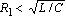
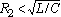
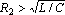
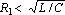
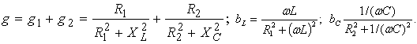

2.7.3.2. –езонансные свойства параллельного контура
—огласно (2.118) реактивные проводимости ветвей R1L и R2C при –“ ќткуда резонансна€ углова€ частота
где
ѕоскольку резонансна€ частота - действительна€ и положительна€ величина, то при  и  или  и режим резонанса токов невозможен, однако при и или  и такой режим возможен. ѕри  резонансна€
частота резонансна€
частота  .
‘изически это означает, что режим резонанса токов (так называемый "вечный" резонанс)
может возникнуть на любой частоте. .
‘изически это означает, что режим резонанса токов (так называемый "вечный" резонанс)
может возникнуть на любой частоте.
–езонансные свойства (добротность, полоса пропускани€ и др.) цепи с двум€ ветв€ми R1L и R2C (рис. 2.80) удобно изучать применительно к еЄ схеме замещени€ с трем€ параллельно соединенными ветв€ми с параметрами g, bL, bC (рис. 2.81), равными:  ƒобротность параллельного колебательного контура (рис. 2.81) определ€етс€ отношением Ємкостной или индуктивной проводимости контура при –“ к его активной проводимости, т. е.
ѕрактически добротность Q показывает кратность тока IC в ветви с конденсатором (без резистора R2, см. рис. 2.80) при режиме –“ над током IPT на зажимах контура, т. е.
|
|||||||

 .
.